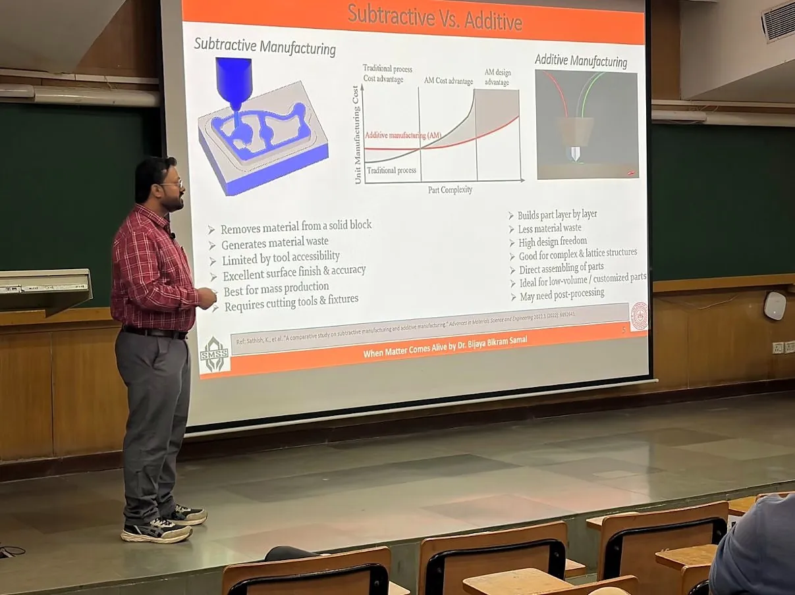
TeachingTutor for TA111 at IIT Kanpur
Taking tutorials for the TA111 course this semester at IIT Kanpur, after serving as tutor for Engineering Graphics (TA-101) earlier in 2026.
Read more about Tutor for TA111 at IIT Kanpur
Institute Postdoctoral Fellow at IIT Kanpur, working on 4D printing, smart materials and metamaterials since 2016.
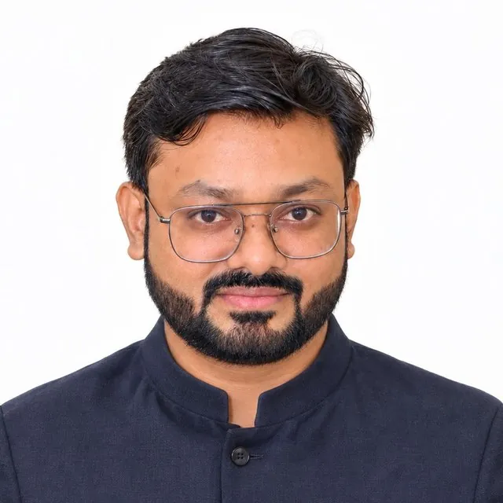
Dr. Bijaya Bikram Samal is an Institute Postdoctoral Fellow in the Smart Materials, Structures & Systems Lab, Department of Mechanical Engineering, IIT Kanpur, where he works with Prof. Bishakh Bhattacharya. He is interested in materials that change their shape over time, known as 4D printing, and in the structures and machines that can be built from them.
He began working on 4D printing in 2016 as an M.Tech student at VSSUT Burla. His 2017 paper at COPEN 10, IIT Madras, is recorded as the first research on 4D printing in India. He went on to complete a Ph.D. on four-dimensional printing at IIT Kharagpur under Prof. C. S. Kumar and Prof. S. K. Varshney, and to edit the Wiley book 4D Printing Technology with them. At IIT Kanpur he works on bioinspired Bouligand-auxetic metamaterials and the Cargo Hyperloop project, and enjoys teaching and mentoring students along the way.
The work has grown one step at a time: a low-cost FDM printer built as a B.Tech project in 2015, shape-changing parts in 2016, a Ph.D. on 4D printing at IIT Kharagpur, a Wiley book with his mentors, and now metamaterials and transport systems at IIT Kanpur, always with the guidance of mentors and the help of many collaborators and students.
Shape programming, material characterization and parametric optimization of 4D-printed shape memory polymers, from honeycombs to bioinspired metamaterials.
Explore researchFour working prototypes, including a Cargo Hyperloop demonstrator and a 4D-printed steganography device, plus two filed Indian patents.
Explore innovationTutoring at IIT Kanpur, mentoring students, editing 4D Printing Technology and the Wiley series Advances in Additive Manufacturing, and reviewing for 14+ journals.
Explore booksFunded projects and laboratory programmes at IIT Kanpur and IIT Kharagpur, spanning smart materials, structures and systems.
Dr. Samal's research covers 4D printing, shape memory polymers, bioinspired metamaterials, sustainable polymers and laser post-processing of metal additive manufacturing. His work appears in journals such as Smart Materials and Structures, Science of the Total Environment, Thin-Walled Structures and Sensors and Actuators A, and in books from Wiley, Elsevier and CRC Press.
He has presented at international conferences in Germany, the USA, the Netherlands and South Korea, including a Highlight Lecture at MSE 2024, Darmstadt. He mentors two Ph.D. scholars and has guided six research interns and two B.Tech projects.
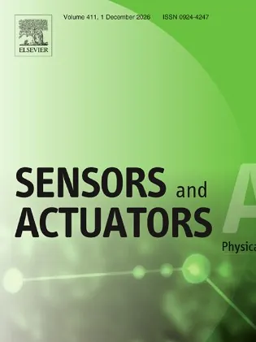
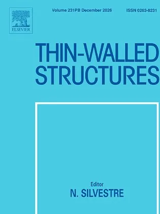
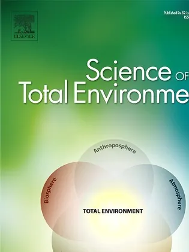
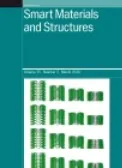
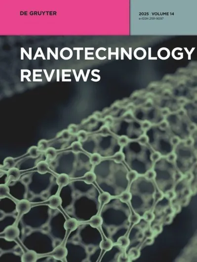
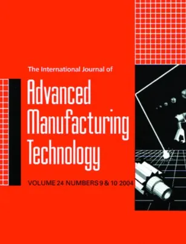
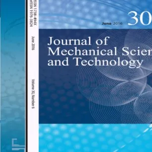
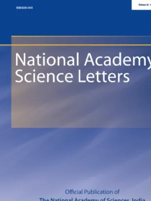
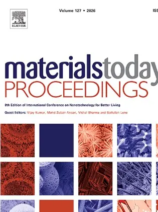
Research visits, conference leadership and talks across Asia, Europe and North America.
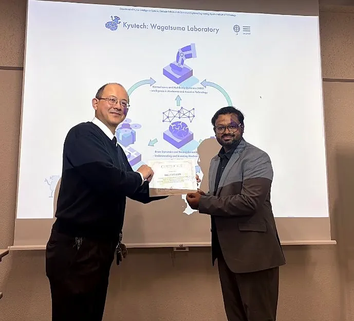

TeachingTaking tutorials for the TA111 course this semester at IIT Kanpur, after serving as tutor for Engineering Graphics (TA-101) earlier in 2026.
Read more about Tutor for TA111 at IIT KanpurResearch visit to Prof. Hiroaki Wagatsuma's lab at Kyushu Institute of Technology on multimodal human–machine interaction (neural signals, eye tracking, motion capture), plus 4D printing discussions with Prof. Fujio Tsumori, Kyushu University.
Read more about JST Sakura Science Exchange Fellowship, Japan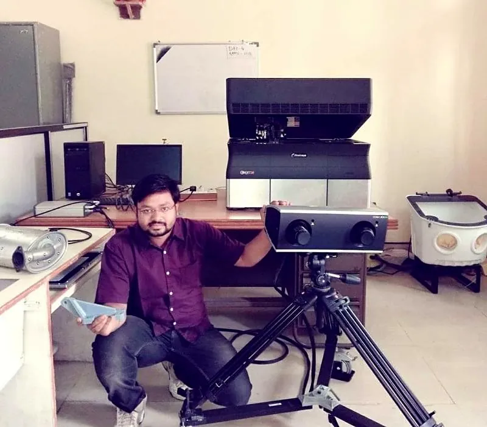
PaperPeridynamics modelling and experiments on wave isolation in 3D-printed shells and mechanical metasurfaces, published in Thin-Walled Structures (IF 6.6).
Read more about Wave isolation in shells and metasurfaces (Thin-Walled Structures, Q1)Thermal-plume and thermo-mechanical characteristics of coated Nitinol shape memory alloy actuators, published in Sensors and Actuators A: Physical.
Read more about Nitinol SMA actuators with bead-on-fiber coating (Sensors & Actuators A, Q1)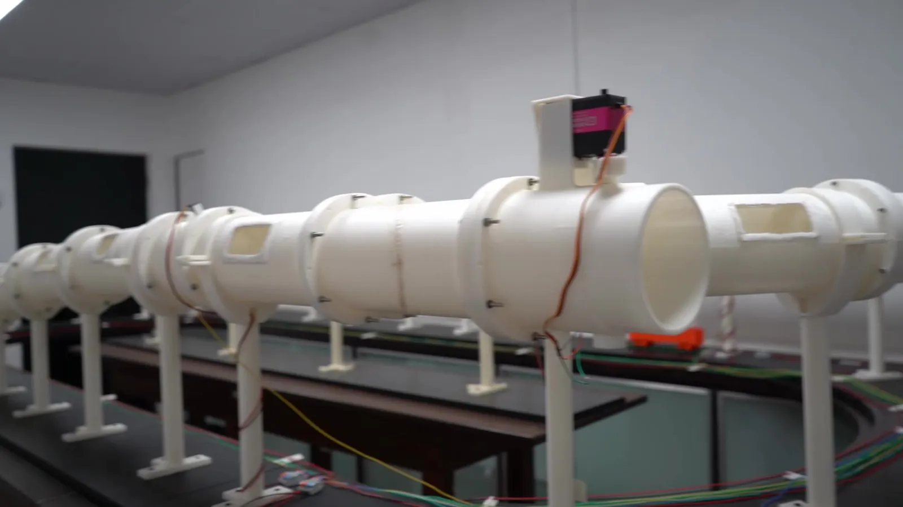
ProjectThe Compressed-Air Based Cargo Hyperloop (CABCH) proof of concept, built at the SMSS Lab for CMPDI, Ministry of Coal, with Dr. Samal as team leader. Watch the project film.
Read more about Cargo Hyperloop prototype demonstrated at IIT Kanpur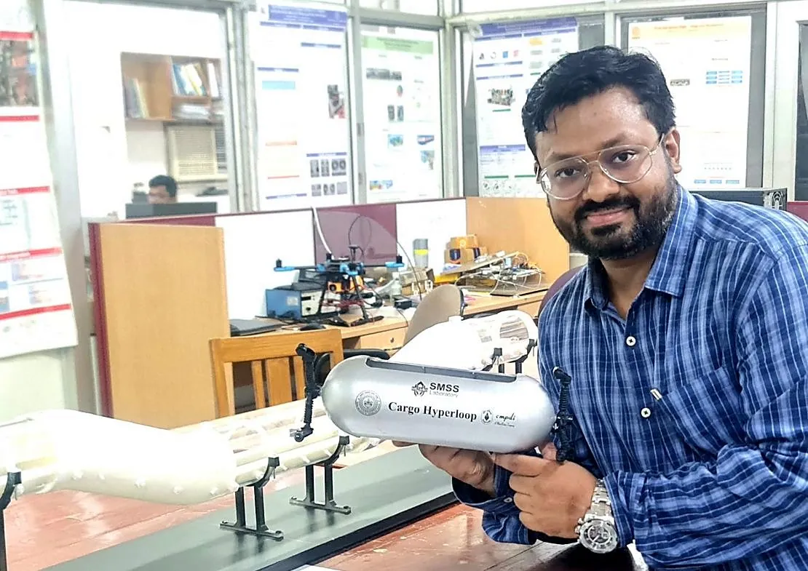
PatentFiled: a compressed-air propelled Cargo Hyperloop system with rail-wheel configuration (202611001298) and an additively manufactured Bouligand-auxetic metamaterial (202611014037).
Read more about Two Indian patents filedLightweight nickel foam coated with multi-walled carbon nanotubes for electromagnetic interference shielding, with multiphysics evaluation.
Read more about MWCNT-coated nickel foam for EMI shielding (Nanotechnology Reviews, Q1)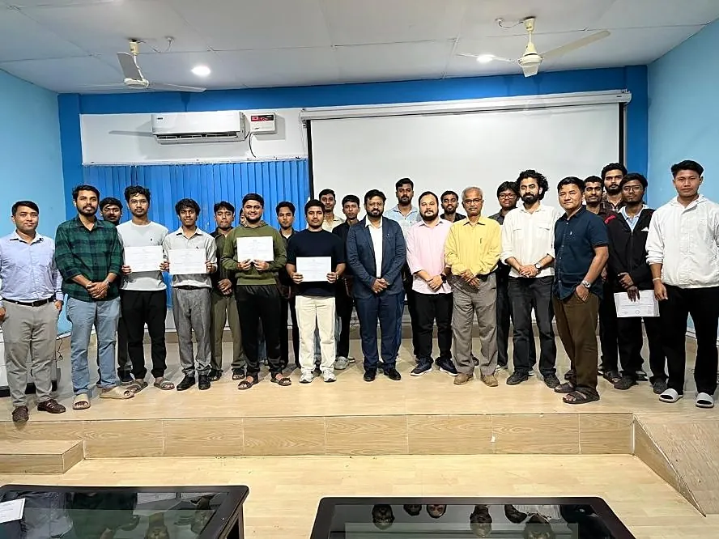
WorkshopSpeaker at the two-day RAMEA 2026 pre-conference workshop "3D/4D Printing: From Fundamentals to Functional Structures & Innovation Pathways" at NERIST, Arunachal Pradesh, with speakers from IIT Kanpur, IIT Bombay and IIT Guwahati.
Read more about 3D/4D printing workshop at RAMEA 2026, NERIST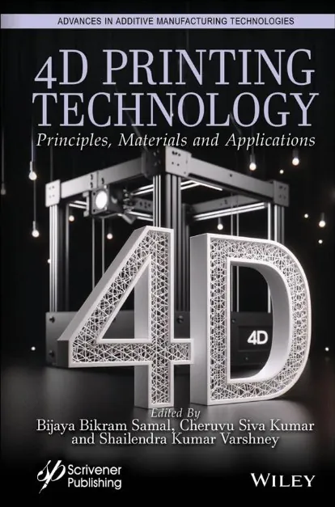
Wiley, 2025 · ISBN 978-1394212583
Wiley, accepted
2021 – 2026
Counts from the CV (October 2026). Citation numbers refresh automatically from Google Scholar and OpenAlex.
| Metric | Google Scholar | Scopus | OpenAlex · live |
|---|---|---|---|
| Citations | 153 | 106 | – |
| h-index | 8 | 6 | – |
| i10-index | 6 | – | – |
Talks, features and the paper that started 4D printing research in India.
Indian researchers develop the world's strongest 4D-printed parts. Manufactur3D's 2018 feature on the 4D-printed components made by Samal, Jena and Mishra at VSSUT Burla.
Controlled Shape Changing Components by Using 4D Printing Technology. The COPEN 10 paper recorded as the first research in India on 4D printing.
Controlled shape changing components using 4D printing. Invited talk at the 4D Printing and Metamaterials Conference.
4D printing: Fundamentals and Applications. Lecture at the 9th Annual National Conference, ATRUM, SASTRA Deemed University.
4D printing of shape memory polymer via extrusion AM: process parameters and optimization. 4D Materials Design and Additive Manufacturing Conference.
4D printing: comparing programming strategies for FDM/FFF processed SMP. 4D Materials Design and Additive Manufacturing Conference.